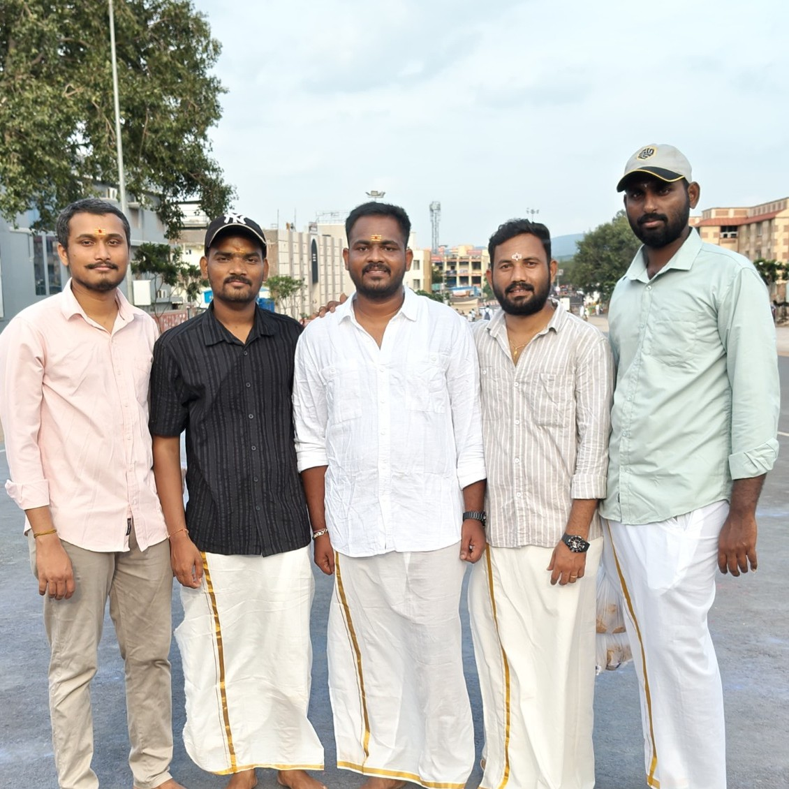

01
The plan
My friends had been planning this trip for almost a month, but we never found the right time. Finally, we decided to go. At the last minute, work almost made me cancel. I changed my mind — and that is how our Srisailam trip finally began.